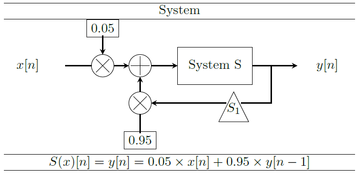

Computer Exercise 2 (All Teams)
Linear Systems and Convolution
Objectifs
- Understanding and manipulating linear systems
Exercices
The aim of this part is to create a linear system and to pass a sum of signals through it. The input signal will be a sum of 3 or 4 of the following signals:
x1[k]=sin(2πk100) x2[k]=4e−1300(k−150)2−e−12500(k−150)2 x3[k]=⎧⎩⎨⎪⎪1−20 if 240≤k<300 if 300≤k<380 otherwise x4[k]= Gaussian Noise
The linear system we consider here is a recursive filter (it means that it uses the values it has already computed to compute the next values). Recursive filters are also called Infinite Impulse Response (IIR) filters to oppose to filters carried out by convolution which are called Finite Impulse Resonse (FIR) filters.
System properties
|  |
|
Figure 1.1. Definition of the system
|
Input signal generation
As well as numpy Gaussian distribution on this site.
For presentation purpose, you may want to display
Signal and decomposition response
Filter's response to a noisy signal
The filter you implemented is called Single Pole Low-Pass Filter
1D Convolution Implementation
Convolution is defined on infinite signals. However, in case of discrete signals, we often encounter finite-length signals.
Suppose
During lecture, we illustrated convolution on causal signals on the following signal:
An the following impulse response:
Convolution Example: Moving Average Filter
The moving average filter is optimal for a common task in DSP: reducing random noise while retaining a sharp step response. It operates by averaging a number of points from the input signal to produce each point in the output signal.
In equation form, this is written:
It differs slightly from the definiont of convolution we saw during the lecture. The different between both will be seen in depth in Computer Exercise number 4.
In the mean time, let us re-define the moving average filter for the current Computer Exercise...
Let us consider the change of variable
For example, in a
We can notice here that the system is no more causal and neither is
What do you observe ?